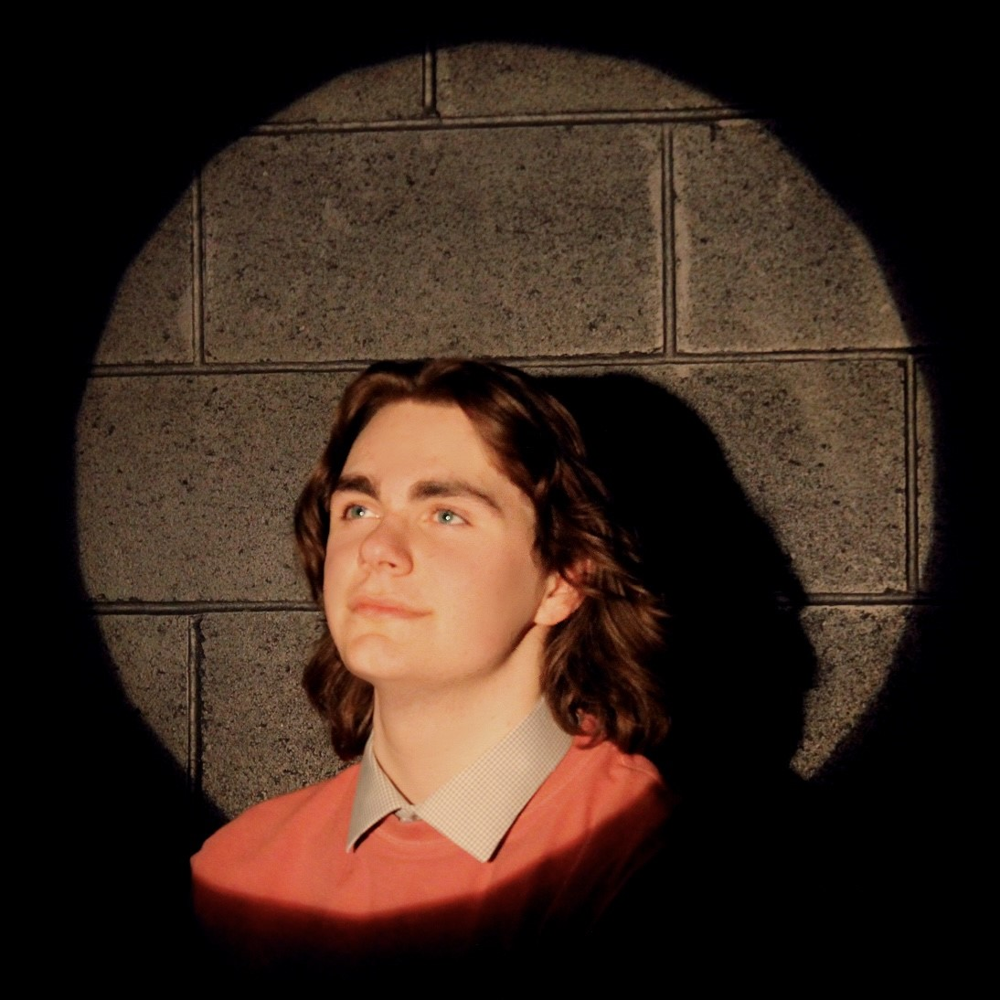
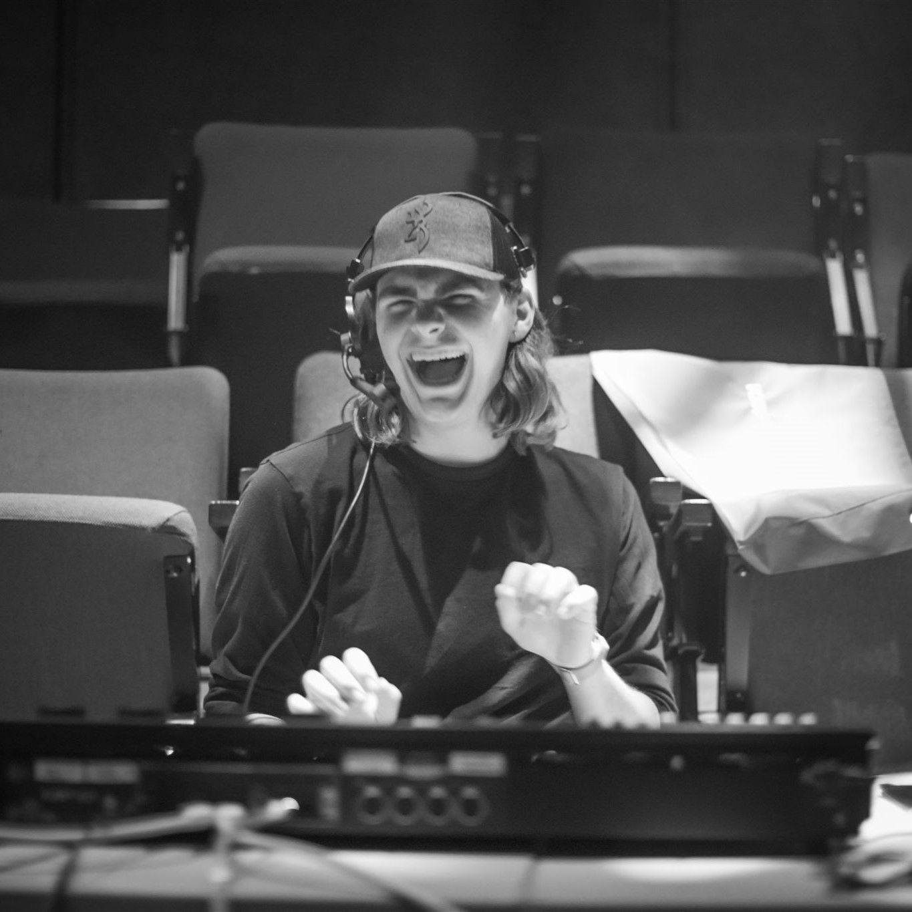
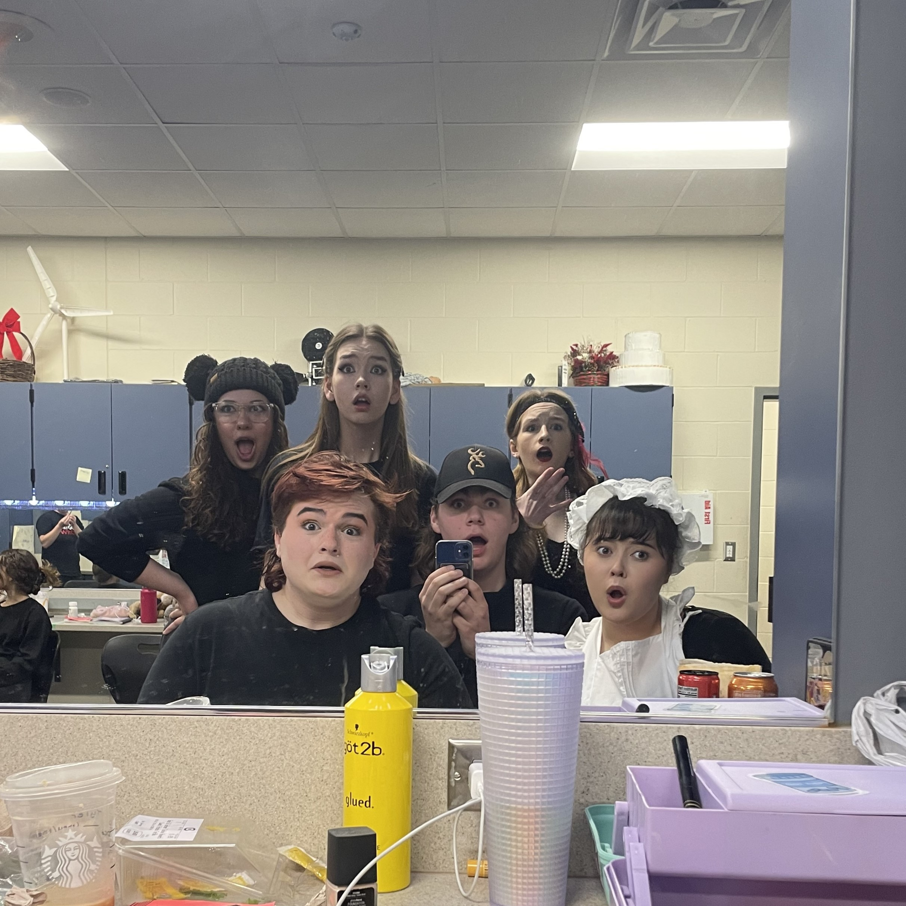

Shedding light on my passion for creating immersive visual experiences, one spotlight at a time
as I illuminate stages and bring stories to life through the art of lighting.

Hello!
I'm Logan, a seasoned theatrical lighting designer with a solid two-year track record in the industry. Throughout my career, I have had the privilege of serving as the head designer for a total of six remarkable productions, where I've honed my skills in crafting captivating lighting experiences that enhance the artistic vision of each show. I'm genuinely passionate about the transformative power of light in theater, and I'm eager to continue pushing the boundaries of my craft while collaborating with talented teams to create unforgettable theatrical spectacles.

A Little About My Work
Over the course of my career, I've been fortunate to gain hands-on experience with a diverse range of lighting consoles, including the ETC Ion XE and ETC Element 2. My expertise extends beyond consoles, as I've primarily worked with cutting-edge LED fixtures, while also cultivating proficiency with traditional incandescent fixtures. This well-rounded exposure has provided me with a comprehensive understanding of both DMX-based control systems and dimmers, enabling me to seamlessly adapt to various technological setups and deliver exceptional lighting designs for a wide array of theatrical productions.

Spanning Outside Of The Theater
In my view, the world of theatrical lighting design is a truly exceptional and distinct field. Not only does it afford opportunities to collaborate with talented professionals, but it also fosters a sense of camaraderie among the theater community, leading to strong bonds with colleagues who become like a second family. The relationships forged in this dynamic environment often extend beyond the theater walls, creating friendships that thrive both during and outside of productions, making the social aspect of this profession truly unparalleled and immensely rewarding.
My Story
Hello! My name is Logan Godfrey, I'm a lighting designer based out of Minnesota, and currently attending the University of Wisconsin Stevens Point, majoring in Theatre Design and Technology. I started my theatrical career in early middle school, beginning to act in our school's musical. After one show I became hooked, and deep down I knew that I was destined to be a great actor. When the auditions for the next year's musical opened up, I just had to audition. Once I started my audition, I forgot my lines, music, and everything I prepared, and bombed it. When I wasn't cast I decided to join the tech team, since I was so desperate to participate in the show, even if it meant not being on stage. I soon realized "Hey this is kind of fun" and started to enjoy myself. From there on instead of signing up for auditions, I signed up for tech instead. Cue High School, I'm in a new school, with new classes, and new people around me, and instead of our shows being held in our cafeteria, they're held on an actual stage. Everything is going great, but as soon as it started, it stopped. We were locked in our homes, uncertain of everything. Soon into the pandemic, I made the move from the heart of Texas up to Minnesota. Dealing with the pandemic whilst being brand new to a state was tough, but I found solace in the theatre, which was still chugging along throughout the pandemic. The people I met during this time soon became my second family, pulling me in deeper and deeper and making me fall in love with theatre even more. A short 3 wild years later and here we are, I'm truly thankful for every opportunity I have been given throughout the years and I truly owe it to my directors, my family, and most importantly my friends, who have been there through thick and thin. Thank you